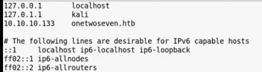

Random machine : onetwoseven 10.10.10.133
1. nmap
2. check page
3. check page source
4. change dns in /etc/hosts to access onetwoseven.thb

5. explore host- - onetwosen.htp/signup.php
6. nikto on host
- nikto -h onetwoseven.htb $
7. sftp in terminal
- sftp <username>@onetwoseven.htb
- <password>